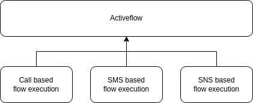

Overview¶
Note
AI Context
Complexity: High – Activeflows are runtime instances of flows. You never create them directly; they are created automatically when a flow is triggered (e.g., by an incoming call or
POST /calls).Cost: No direct cost. Activeflows are a monitoring/control interface. However, the underlying trigger (call, message) may incur charges.
Async: Yes. Activeflows execute asynchronously. Use
GET /activeflows/{id}to poll the current state, or subscribe via WebSocket for real-time updates.
The activeflow is a dynamic entity within the VoIPBIN system that plays a vital role in representing the real-time state of a registered flow. As the flow is executed, it generates an activeflow, which contains an action cursor and relevant status information. This activeflow serves as a control interface, providing efficient management and flexibility during flow execution.
In essence, the activeflow concept is a powerful tool that facilitates the smooth and flexible execution of registered flows. Its dynamic nature allows for real-time updates, ensuring that users can monitor and manage the flow execution efficiently.
By providing real-time status updates and a flexible control interface, the activeflow becomes a valuable tool for businesses to efficiently manage complex workflows and automate their critical processes. The stop functionality adds an extra layer of control and adaptability, allowing users to make informed decisions and optimize their flow executions as required.
Flow vs ActiveFlow¶
Understanding the difference between a Flow and an ActiveFlow is essential for working with VoIPBIN.
+-------------------------------------------------------------------------+
| Flow vs ActiveFlow |
+-------------------------------------------------------------------------+
Flow (Template) ActiveFlow (Running Instance)
+-------------------------+ +---------------------------------+
| o Static definition | | o Dynamic execution state |
| o Reusable template | | o One-time instance |
| o Stored in database | | o Tracks current position |
| o No execution state | | o Contains variables |
| | | o Linked to call/conversation |
+-------------------------+ +---------------------------------+
| ^
| When triggered |
+----------------------------------------+
Creates
Note
AI Implementation Hint
You cannot create an activeflow directly. Activeflows are created automatically when a flow is triggered (e.g., by an incoming call or by creating an outbound call with POST /calls). Use GET /activeflows to list running instances, and POST /activeflows/{id}/stop to terminate one. The reference_type field tells you what triggered the activeflow (call, message, api, etc.).
Analogy: A Flow is like a recipe book. An ActiveFlow is like actually cooking that recipe - you track which step you’re on, what ingredients you’ve used, and the current state of the dish.
Flow (Recipe Book) ActiveFlow (Cooking Session)
+--------------------+ +--------------------------------+
| Step 1: Answer | | Step 1: Answer (done) |
| Step 2: Talk | ------> | Step 2: Talk <-- current |
| Step 3: Branch | | Step 3: Branch (pending) |
| Step 4: Hangup | | Step 4: Hangup (pending) |
+--------------------+ | |
| Variables: |
| caller_id: "+1234567890" |
| digits: "2" |
+--------------------------------+
ActiveFlow States¶
An activeflow has two possible states during its lifecycle:
+------------+ +------------+
| running |----------------------------->| ended |
+------------+ +------------+
| |
| |
Actions executing Final state
Cursor moving No more changes
Variables updating History preserved
Status |
What it means |
|---|---|
running |
The activeflow is actively executing actions. The cursor is moving through the flow, and the state can change at any time. |
ended |
The activeflow has completed. No further execution will occur. The executed_actions history is preserved for review. |
Execution¶
The activeflow’s significance lies in its ability to manage complex workflows and automate business processes effectively. As the flow progresses through its various stages, the activeflow dynamically represents its current state. This representation provides valuable insights into the flow’s progress and status, enabling efficient and informed management of its execution.
+-----------------------------------------------------------------------+
| ActiveFlow Execution Model |
+-----------------------------------------------------------------------+
Incoming Call ActiveFlow Created Execution Begins
| | |
v v v
+---------+ +---------+ +-------------+
| CALL |------------->| NEW |---------------->| RUNNING |
| arrives | | instance| | actions |
+---------+ +---------+ +------+------+
| |
| v
| +-----------+
| Variables set: | cursor |
| o reference_type | moves |--+
| o reference_id +-----------+ |
| o customer_id |
| o flow_id |
+-------------------------------------+

How the Cursor Works¶
The activeflow maintains a “cursor” that tracks the current position in the flow:
Action Array:
+---------+ +---------+ +---------+ +---------+ +---------+
| answer | | talk | | digits | | branch | | hangup |
| index:0 | | index:1 | | index:2 | | index:3 | | index:4 |
+---------+ +---------+ +---------+ +---------+ +---------+
^
|
current_action (cursor is here)
Cursor Movement Rules:
Sequential: By default, cursor moves to the next action in array order
Jump: Actions like
gotoandbranchcan jump to any action by IDNested: Some actions push a new stack (queue_join, ai_talk), cursor enters nested stack
Return: When nested stack completes, cursor returns to original position
Stack-Based Execution¶
ActiveFlows use a stack-based model to handle nested flows (like queue wait flows or AI conversations):
+-----------------------------------------------------------------------+
| Stack-Based Execution |
+-----------------------------------------------------------------------+
Main Stack Nested Stack (from queue_join)
+---------------------+ +---------------------------------+
| 1. answer | | |
| 2. queue_join ======+============> wait_flow actions: |
| 3. talk "connected" | | o talk "Please hold..." |
| 4. hangup | | o play music.mp3 |
+---------------------+ | o (loops until agent answers) |
^ +---------------------------------+
| |
| When agent answers, |
+-----------------------------------------+
return to main stack
Stack Map Structure:
The activeflow maintains a stack_map that tracks all stacks:
stack_map: {
"main": {
actions: [...],
current_index: 1,
return_stack: null,
return_action: null
},
"queue-wait-abc123": {
actions: [...wait flow actions...],
current_index: 0,
return_stack: "main",
return_action: "talk connected"
}
}
Reference Types¶
Each activeflow is linked to a reference - the entity that triggered it:
+--------------------------------------------------------------------+
| ActiveFlow Reference Types |
+--------------------------------------------------------------------+
Reference Type |
When it’s used |
|---|---|
call |
Flow was triggered by an incoming or outgoing call |
conversation |
Flow was triggered by a message in a conversation |
api |
Flow was triggered directly via API call |
campaign |
Flow was triggered by an outbound campaign |
transcribe |
Flow was triggered for transcription processing |
recording |
Flow was triggered for recording processing |
ai |
Flow was triggered for AI processing |
Reference Impact on Actions:
The reference type determines which actions are available:
Reference: call Reference: api
+-------------------------+ +-------------------------+
| (check) answer | | (x) answer (no call) |
| (check) talk | | (x) talk (no media) |
| (check) digits_receive | | (x) digits_receive |
| (check) recording_start | | (x) recording_start |
| (check) message_send | | (check) message_send |
| (check) email_send | | (check) email_send |
| (check) webhook_send | | (check) webhook_send |
| (check) variable_set | | (check) variable_set |
+-------------------------+ +-------------------------+
When an action is not available for the reference type, it is skipped and execution continues to the next action.
Status and Control interface¶
The activeflow includes essential status information that allows users to monitor the flow’s progress closely. This information encompasses details about the activeflow’s current state, including completed and pending actions. Additionally, the activeflow offers a control interface that empowers users to manage the execution process. This interface enables actions such as stopping the activeflow at any point and modifying its configuration or parameters as needed.
Control API Endpoints:
+-----------------------------------------------------------------------+
| ActiveFlow Control Interface |
+-----------------------------------------------------------------------+
GET https://api.voipbin.net/v1.0/activeflows/{id}
+-- View current state
+-- See current_action
+-- Review executed_actions
+-- Check variables
POST https://api.voipbin.net/v1.0/activeflows/{id}/stop
+-- Immediately stop execution
+-- Status changes to "ended"
+-- Triggers on_complete_flow if set
Activeflow Lifecycle¶
The activeflow executes the actions until one of the following conditions is met:
+-----------------------------------------------------------------------+
| ActiveFlow Termination Conditions |
+-----------------------------------------------------------------------+
Condition 1: End of Actions
+---+ +---+ +---+ +---------+
| 1 |-->| 2 |-->| 3 |-->| DONE | -> Status: ended
+---+ +---+ +---+ +---------+
Condition 2: Stop Action
+---+ +---+ +------+
| 1 |-->| 2 |-->| stop | -> Status: ended
+---+ +---+ +------+
Condition 3: Reference Ends (e.g., call hangup)
+---+ +---+ +---+
| 1 |-->| 2 |-->| X | -> Call hangup -> Status: ended
+---+ +---+ +---+
Condition 4: API Stop Request
+---+ +---+ +---+
| 1 |-->| 2 |-->| 3 | + POST /stop -> Status: ended
+---+ +---+ +---+
Main Service Type Completion: The activeflow continues executing flow actions until the primary service type is completed. For instance, in the case of a call service, actions will be executed until the call is hung up.
Stop Action Execution: Execution ceases if an action with the type “stop” is encountered in the flow.
User-Initiated Interruption: Users can actively interrupt their activeflow by sending a POST request to the endpoint:
POST https://api.voipbin.net/v1.0/activeflows/<activeflow-id>/stop.
Variable Management¶
Each activeflow maintains its own set of variables that persist throughout execution:
+-----------------------------------------------------------------------+
| ActiveFlow Variable Storage |
+-----------------------------------------------------------------------+
ActiveFlow: abc-123-def
+-----------------------------------------------------------------------+
| Variables Map |
+---------------------------------+-------------------------------------+
| voipbin.activeflow.id | "abc-123-def" |
| voipbin.activeflow.reference_id | "call-456" |
| voipbin.call.digits | "2" |
| voipbin.call.caller_id | "+14155551234" |
| customer.language | "en-US" |
| customer.tier | "premium" |
+---------------------------------+-------------------------------------+
Variable Lifecycle:
1. Created when activeflow starts (built-in variables)
|
v
2. Updated by actions (digits_receive, variable_set, fetch)
|
v
3. Read by actions (branch, condition_variable, talk with ${var})
|
v
4. Inherited by on_complete_flow (if configured)
|
v
5. Preserved in database when activeflow ends
Executed Actions¶
Within the CPaaS environment, flows can be complex, incorporating various service types such as call, SMS, chat, and more. Handling history logs for these diverse services requires a structured approach.
VoIPBIN simplifies the tracking of executed actions by providing a comprehensive history log within the activeflow. Unlike traditional telephony services with straightforward flows, CPaaS services demand a more flexible approach due to their diverse nature.
In VoIPBIN, each action in the activeflow defines a distinct step in the service’s behavior. This ensures clarity in tracking the sequence of actions performed.
+-----------------------------------------------------------------------+
| Executed Actions History |
+-----------------------------------------------------------------------+
Time ---------------------------------------------------------------------->
+----------+ +----------+ +----------+ +----------+
| answer |-->| talk |-->| connect |-->| message |
| 10:00:01 | | 10:00:02 | | 10:00:15 | | 10:00:45 |
+----------+ +----------+ +----------+ +----------+
v v v v
+---------------------------------------------------------+
| executed_actions array |
+---------------------------------------------------------+
{
"executed_actions": [
{
"type": "connect",
"option": {
"source": {
"type": "tel",
"target": "+15559876543"
},
"destinations": [
{
"type": "tel",
"target": "+15551112222"
}
]
}
},
{
"id": "605f5650-ba92-4dcd-bdac-91fcf6260939",
"next_id": "00000000-0000-0000-0000-000000000000",
"type": "message_send",
"option": {
"text": "hello, this is a test message.",
"source": {
"type": "tel",
"target": "+15559876543"
},
"destinations": [
{
"type": "tel",
"target": "+31616818985"
}
]
}
}
]
}
With the detailed information provided in the executed_actions array, customers can easily review and understand the history logs of their CPaaS services.
On Complete Flow¶
When an activeflow ends, it can trigger another flow automatically:
+-----------------------------------------------------------------------+
| On Complete Flow Chain |
+-----------------------------------------------------------------------+
ActiveFlow A ActiveFlow B
+-------------------------+ +-------------------------+
| on_complete_flow_id: B | | Created automatically |
| | | |
| status: "ended" |------------>| status: "running" |
| | | |
| Variables: | inherited | Variables: |
| call_id: "123" |------------>| call_id: "123" |
| recording_id: "456" | | recording_id: "456" |
+-------------------------+ +-------------------------+
Key Behaviors:
New activeflow is created with a new ID
Variables are copied from parent to child
reference_activeflow_idis set to parent’s ID (tracks the chain)Maximum chain depth is 5 (prevents infinite loops)
Error Handling¶
ActiveFlows handle errors gracefully to ensure reliable execution:
+-----------------------------------------------------------------------+
| Error Handling Scenarios |
+-----------------------------------------------------------------------+
Scenario: Action fails
+---+ +---+ +-----+ +---+
| 1 |-->| 2 |-->| ERR |-->| 4 | (skip failed action, continue)
+---+ +---+ +-----+ +---+
Scenario: Critical failure
+---+ +---+ +-----+
| 1 |-->| 2 |-->| ERR | -> Status: ended (flow stops)
+---+ +---+ +-----+
Scenario: Max iterations exceeded
+---+ +---+ +---+ +---+
| 1 |<->| 2 |<->| 3 |<->| X | -> Infinite loop detected, stop
+---+ +---+ +---+ +---+
Safety Limits:
Limit |
Value |
Purpose |
|---|---|---|
Max iterations per cycle |
1000 |
Prevents infinite loops in goto/branch |
Max total execute calls |
100 |
Prevents runaway execution |
Max on_complete chain depth |
5 |
Prevents infinite flow chaining |
Common Use Cases¶
Use Case 1: IVR Menu with History Tracking
+--------------------------------------------------------------------+
| executed_actions shows the complete journey: |
| |
| 1. answer --> 2. talk "Welcome" --> 3. digits "2" --> 4. branch |
| --> 5. talk "Support" --> 6. queue_join --> 7. connect agent |
+--------------------------------------------------------------------+
Use Case 2: Post-Call Processing
Call Flow ActiveFlow After Call Work ActiveFlow
+----------------------+ +------------------------------+
| answer | | fetch recording |
| talk | | ai_summarize |
| connect to agent | | webhook_send summary |
| (call ends) |---------->| email_send transcript |
| | | |
| on_complete: "acw" | | Inherits: recording_id, |
+----------------------+ | call_id |
+------------------------------+
Use Case 3: Debugging Flow Execution
GET https://api.voipbin.net/v1.0/activeflows/{id}
Response shows:
{
"status": "running",
"current_action": {
"type": "digits_receive",
"option": { "duration": 5000 }
},
"executed_actions": [
{ "type": "answer", ... },
{ "type": "talk", "option": { "text": "Welcome" } }
],
"variables": {
"voipbin.call.caller_id": "+14155551234"
}
}
-> You can see exactly where the flow is and what has happened
Troubleshooting¶
Execution Issues
Symptom |
Solution |
|---|---|
Activeflow stuck in “running” state |
Check |
Flow ended unexpectedly |
Check |
Variables not inherited in chained flow |
Ensure |
Control Interface Issues
Symptom |
Solution |
|---|---|
Stop request returns 404 |
Verify the activeflow ID exists and belongs to your customer; activeflows in |
Actions being skipped |
Check |